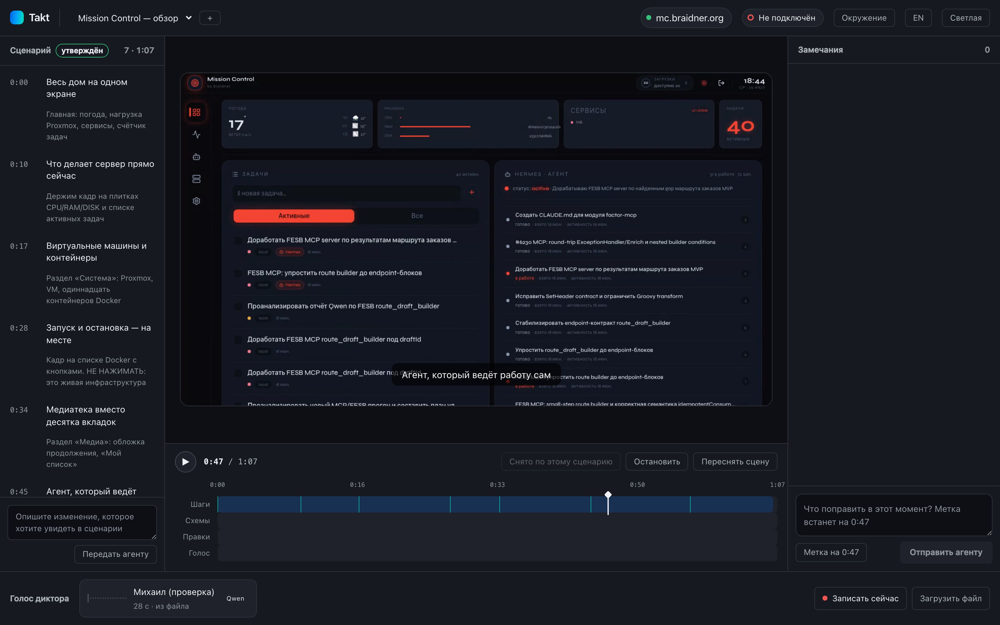
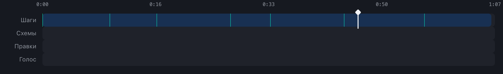
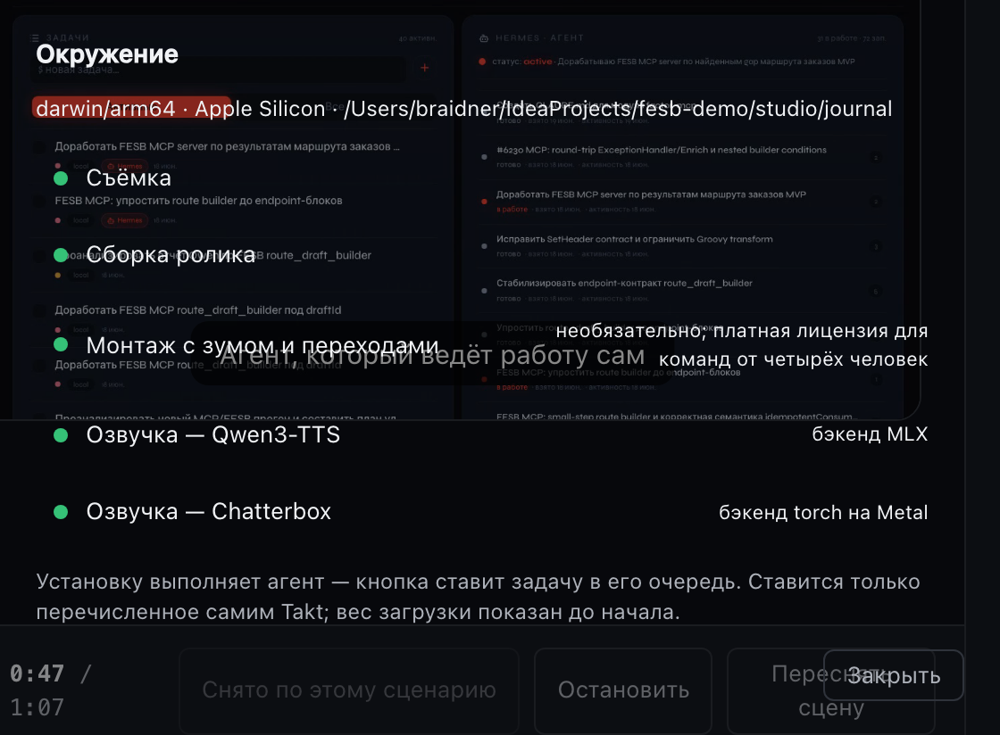

Опишите ролик словами. Агент снимет, смонтирует и озвучит.
Takt — студия демонстрационных роликов для веб-интерфейсов. Сценарий собирает ИИ-агент, разведав ваш интерфейс; человек правит и принимает результат.

0:10Как снимается
-
0:00
Задача — одним сообщением
«Показать, как создать домен, добавить маршрут и запустить». Агент разведывает интерфейс и собирает сценарий: шаги, титры, хронометраж. Вы правите его до съёмки — перетаскиванием, без ожидания.
-
0:14
Съёмка — headless, с живым экраном
Playwright проходит сценарий в браузере и пишет телеметрию: что нажато и когда. В студии виден живой экран и прогресс по шагам — видно, что происходит и где застряло. Машина остаётся свободной.
-
0:31
Правки — метками на таймлайне
Смотрите ролик и ставите замечания по таймкодам: «пауза длинная», «переозвучить», «показать схему». Агент разбирает их по стоимости и показывает план до работы: монтаж — минуты, пересъёмка — только если меняется кадр.
-
0:47
Озвучка — клонированным голосом
Голос диктора записывается прямо в браузере — с согласия его обладателя. Реплики раскладываются по титрам и проверяются на укладку до синтеза. Два движка: Qwen3-TTS и Chatterbox, сравниваются на одной реплике.
0:24Ролик — артефакт сборки
Титры, схемы и дикторский текст лежат данными, а не выжигаются в видео. Поэтому правка не равна пересъёмке — пересобирается только то, что изменилось.

0:41Установка
Takt — скилл для Claude Code. Код живёт в репозитории, ваши ролики, голоса и разведанные системы — отдельно, в ~/takt, и переживают любое обновление.
$ git clone https://github.com/Braidner/takt ~/takt-studioкод студии$ cd ~/takt-studio && npm install && npx playwright install chromiumзависимости и браузер для съёмки$ ln -s ~/takt-studio ~/.claude/skills/taktтеперь это скилл Claude Code$ node cli.mjs serveстудия на localhost:4173
Дальше — скажите агенту «сними демо по …» и откройте студию. Озвучка ставится отдельно и по желанию: takt install покажет, что и сколько весит, до загрузки.

Снято.
Один вечер — и ваш продукт рассказывает о себе сам.